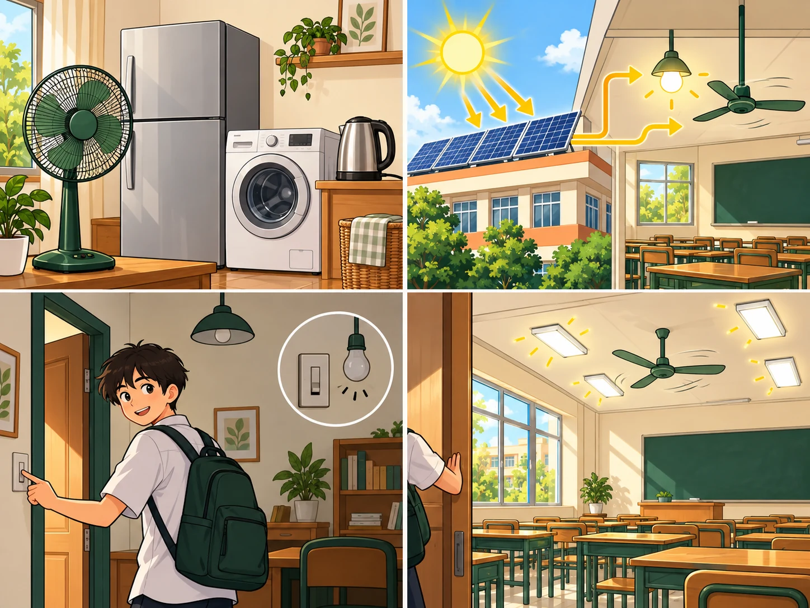
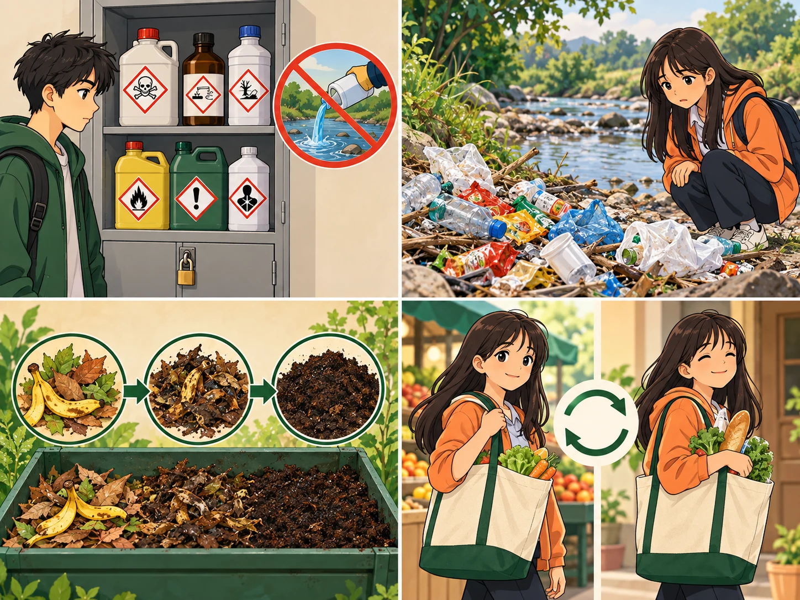

Language
Lesson 2
Four stops in 45 minutes
- ✏️
Guess the drawing
What am I going to draw?
4 min - 🗣️
Pronunciation
/kl/ · /pl/ · /gr/ · /pr/
11 min - 📚
Vocabulary
Words for the environment
12 min - 🔮
Grammar
Future forms · passive voice
12 min
By the end of this lesson…
- 🔊
Pronunciation
Say /kl/ /pl/ /gr/ /pr/ clearly — in words and in whole sentences.
- 🌍
Vocabulary
Use key words for talking about humans and the environment.
…and also
- 🔮
Grammar
Choose will or be going to; turn an active sentence into the passive.
- 🤖
Digital & AI
10.C2.3 digital dictionaries · 10.C2.MR2 drill pronunciation with an app
Guess the drawing
Teams · use “be going to”
4 minutesWhat am I going to draw?
Watch the lines appear on screen. Guess with one full sentence: You are going to draw a…
Three drawings today — and one thing they share. A bicycle, an electric bus, a solar car — all eco-friendly transport. Ask: what does each one not put into the air?
Pronunciation
/kl/ · /pl/ · /gr/ · /pr/
11 minutesFour consonant blends · page 19
/kl/
class
clean
club
/pl/
play
place
plastic
/gr/
ground
green
grass
/pr/
protect
present
proud
Which blend is hardest?
10.C2.MR2 Record yourself and check with a pronunciation app. The two letters run together — no vowel between them. Say it slowly, then speed up.
Circle the blends, then read aloud · page 19
📖 Textbook, page 19
Listen to each sentence. Circle every word with /kl/ /pl/ /gr/ or /pr/, then read the sentence to your partner.
Which blend is hardest for you? Most learners find /pr/ and /gr/ hardest — the /r/ pulls the lips forward. Practise protect and green slowly.
Vocabulary
Words for the environment
12 minutes
household appliances
(np) /ˈhaʊshəʊld əˈplaɪənsɪz/ thiết bị gia dụng Turn off household appliances when not in use.energy
(n) /ˈenədʒi/ năng lượng Solar panels give our school clean energy.
carbon footprint
(np) /ˌkɑːbən ˈfʊtprɪnt/ dấu chân các-bon: lượng khí nhà kính tạo ra Cycling can reduce our carbon footprint.
litter
(n/v) /ˈlɪtə(r)/ rác xả bừa bãi; xả rác Please do not drop litter in the schoolyard.
eco-friendly
(adj) /ˌiːkəʊ ˈfrendli/ thân thiện với môi trường We choose eco-friendly products with less packaging.turn off
(phr. v) /tɜːn ɒf/ tắt (đèn, thiết bị điện) We turn off lights to lower our energy bill.Match the word with its definition · page 20 · 1–3
- 1. appliances d
- 2. energy e
- 3. carbon footprint a
Match the word with its definition · page 20 · 4–5
- 4. litter b
- 5. eco-friendly c
One word in each gap · page 20
1. ______ products do less harm to the planet. Eco-friendly
2. Turn off all ______ when you leave the room. household appliances
3. Cycling to school lowers your ______. carbon footprint
4. Solar panels give us clean ______. energy
5. Please do not drop ______ in the schoolyard. litter
Two minutes. How many sentences?
One sentence must use one new word — correctly.
Teams write on paper. A sentence only counts if the whole class agrees it makes sense.
10.C2.3 Check your collocations in a digital dictionary. We reduce our carbon footprint every time we cycle to school.
Grammar
Future forms · passive voice
12 minuteswill or be going to?
will
A decision you make as you speak. A prediction.
I think I ’ll join the club.
It will rain tomorrow.
be going to
A plan you already made. Evidence you can see now.
We are going to plant trees on Sunday.
Look at those clouds — it ’s going to rain.
Choose the right form · page 20
1. Don’t worry — I ______ help you carry those bottles. will
2. We ______ clean up the beach this Saturday. It’s all arranged. are going to
3. I think more people ______ cycle to work in the future. will
4. Look at that smoke — the factory ______ pollute the river again. is going to
5. Perhaps our school ______ install solar panels one day. will
Rewrite in the passive · 1–2
be + past participle. Use it when what gets done matters more than who does it.
- 1. More and more people adopt a green lifestyle. A green lifestyle is adopted by more and more people.
- 2. The students did not put the rubbish in the bins yesterday. The rubbish was not put in the bins after the party yesterday.
Rewrite in the passive · 3
- 3. They will plant more trees in the neighbourhood. More trees will be planted in the neighbourhood.
Rewrite in the passive · 4–5
be + past participle. Use it when what gets done matters more than who does it.
- 4. Our club is going to organise a lot of clean-up activities. A lot of clean-up activities are going to be organised by our club.
- 5. They discussed important environmental issues at the meeting. Important environmental issues were discussed at the meeting.
Before you go
Chain memory game
“Next week I’m going to… , and I think I’ll…”
Each student repeats everything said before, then adds one green action.
Homework: workbook Language exercises; prepare for Lesson 3 — Reading.
Homework
Today’s board
Sounds: /kl/ /pl/ /gr/ /pr/
Words: household appliances · energy · carbon footprint · litter · eco-friendly
Grammar: will vs be going to · passive voice